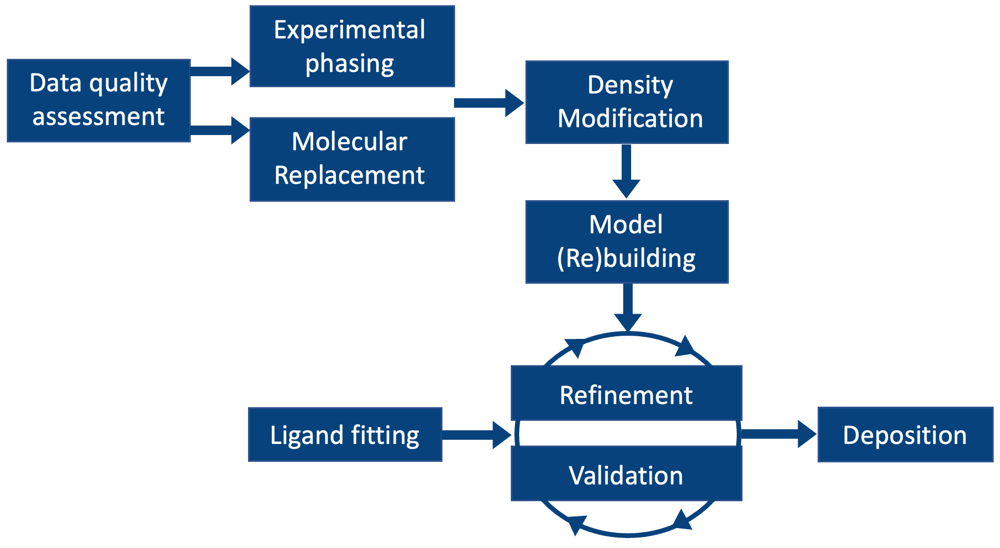

<br>
<h3>Crystallographic Structure Solution with Phenix</h3>
<p>Click on the boxes in the figure to read an overview of each step.</p>

<div style="position: relative; margin-top: 20px;">

  <a id="area1" class="area" href="./xray-data-quality.html"></a>
  <a id="area2" class="area" href="./xray-experimental-phasing.html"></a>
  <a id="area3" class="area" href="./xray-molecular-replacement.html"></a>
  <a id="area4" class="area" href="./density-modification.html"></a>
  <a id="area5" class="area" href="./xray-model-building.html"></a>
  <a id="area6" class="area" href="./xray-refinement.html"></a>
  <a id="area7" class="area" href="./validation.html"></a>
  <a id="area8" class="area" href="./ligands.html"></a>
  <a id="area9" class="area" href="./xray-structure-deposition.html"></a>

  
</div>

<h3>GUI documentation for most used programs:</h3>
<ul>
  <li>Check data quality with <a href="../reference/xtriage_gui.html"><b>Xtriage</b></a></li>
  <li>Experimental phasing with <a href="../reference/autosol_gui.html"><b>AutoSol</b></a></li>
  <li>Molecular replacement with <a href="../reference/phaser_mr.html"><b>Phaser</b></a></li>
  <li>Model building with <a href="../reference/autobuild_gui.html"><b>AutoBuild</b></a></li>
  <li>Refine your model with <a href="../reference/refine_gui.html"><b>phenix.refine</b></a><br></li>
  <li><a href="../reference/validation.html"><b>Validation</b></a> tools in Phenix</li>
  <li>Fit your ligand with <a href="../reference/ligandfit_gui.html"><b>LigandFit</b></a></li>
  <li>How to generate <a href="../making_geometry_restraints.html"><b>geometry restraints</b></a></li>
  <li>Prepare your model and data for <a href="./xray-structure-deposition.html"><b>deposition</b></a></li>
  <li><a href="../reference/index.html">Complete list</a> of programs for each structure solution step</li>
</ul>


